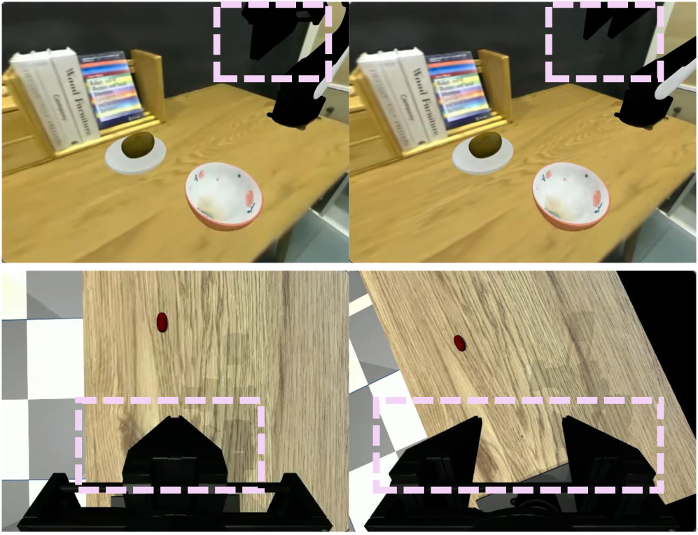
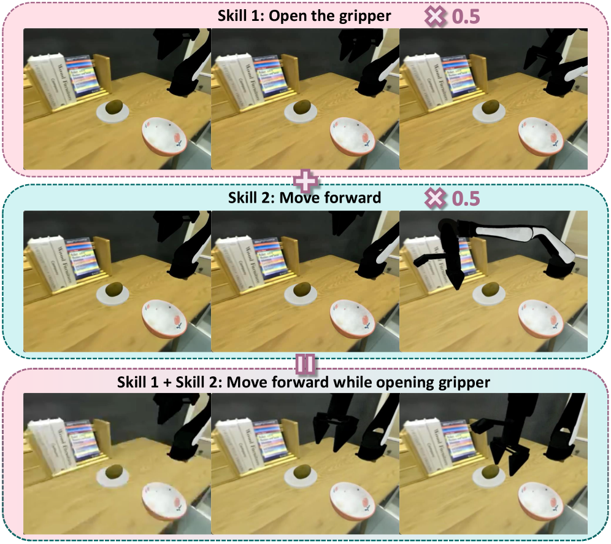

제출: 2026년 7월 9일 · 백본 ACT · OpenVLA-OFT · 실기 Galaxea A1 · 8p 8fig
한 줄 요약 (TL;DR)
기존 visuomotor 정책에 플러그인으로 붙는 학습형 skill 라이브러리 + skill router. 4가지 자기지도 손실(재구성·KL·행동 정렬·skill disentanglement)로 K개의 재사용 가능한 원자 스킬을 마이닝, few-shot 적응 시 백본과 skill은 고정, router와 action head만 미세조정. LIBERO 5-demo cross-suite 전이 +38.3pt(Object 47.4→79.6, Goal 45.4→83.2, Spatial 42.0→86.8), 실기 5-demo +28.5pt. K=4가 실용 sweet spot이며 skill이 "gripper 열기" 같은 씬-불변 원시 행동을 실제로 획득함을 정성적으로 검증.
1배경 · 문제의식
End-to-end visuomotor 정책(ACT, OpenVLA-OFT, DP)은 강력하지만 행동 재사용 구조가 명시적이지 않다. 새 태스크에 소수 데모(5~10개)만 있을 때 전체를 미세조정하면 (1) 표현이 소량 데이터에 과적합되고, (2) 이전 태스크 능력이 무너지며, (3) 조합적 제어(pick+place, approach+release)를 학습 데이터 밖으로 확장하기 어렵다. 저자들은 "백본은 그대로 두고, 학습된 skill을 재조합해 새 태스크에 빠르게 적응"이라는 플러그인 접근을 제안한다.
2핵심 Contribution
Plug-in skill 프레임워크 — ACT, OpenVLA-OFT 등 다양한 backbone에 동일 방식으로 부착 가능한 skill library + interactor + router.
4-loss 자기지도 skill 마이닝 — 재구성(BC) + KL + Behavioral Skill Alignment(mutual information 최대화) + Skill Disentanglement(중복 억제)의 조합으로 씬에 불변한, 서로 다른 스킬을 학습.
기존 정책을 scene-context encoder와 action head로 분해한 뒤 그 사이에 세 모듈을 삽입:
Skill Library: 학습 가능한 K개의 continuous embedding {s_k ∈ ℝ^{d_s}}. 태스크 전반에 공유되는 원자 행동의 잠재 표현.
Skill Interactor: 씬 표현과 각 skill 임베딩 사이의 cross-attention으로 skill-특화 특징 f_k 계산.
Router: chunk-단위로 K개 skill에 대한 가중치 π(π_1..π_K)을 예측, f = Σ π_k · f_k를 action head에 전달.
추가로 Trajectory-Skill 사후 인코더 q_φ(VAE 스타일)가 학습 시에만 존재해 action 시퀀스만으로 skill 조건을 만든다 — 관측 없이 행동 구조만 보게 함으로써 skill이 시각 편향에 오염되지 않고 행동 기반이 되도록 유도.
자기지도 손실 (skill 마이닝)
ℒ = ℒ_rec + λ_KL·ℒ_KL + λ_BSA·ℒ_BSA + λ_SD·ℒ_SD
ℒ_rec: 예측 action chunk의 ℓ₁ BC 손실.
ℒ_KL: 사후분포에 정보 병목 → trajectory-specific 세부가 skill에 스며드는 것을 억제.
ℒ_BSA (Behavioral Skill Alignment): soft-label 분류로 skill ↔ 궤적-레벨 행동 사이의 mutual info 최대화.
ℒ_SD (Skill Disentanglement): skill-조건 특징 간 유사도 패널티로 중복 skill 방지.
Few-shot 적응 프로토콜
동결
백본 vision/language encoder + skill library {s_k}
미세조정
Router + action head만 (~수 %의 파라미터)
데모
새 태스크당 5~10개
4실험 결과
DISCOVERSE (7 태스크, ACT + SkillPlug)
어려운 태스크 multi-task 개선: jujube pick 6.7 → 94.0, stack block 15.3 → 80.7, block bridge place 0.7 → 36.7, drawer open 0.0 → 100.0.
Few-shot(10-demo) 개선: cuplid cover 0.7→18.7, block place 36→56, jujube place 0→29.3, mouse push 82→87.3.
LIBERO (OpenVLA-OFT + SkillPlug)
Suite
OpenVLA-OFT
+SkillPlug (multi-task)
5-demo cross-suite
Baseline 5-demo
Long
—
93.5
—
—
Object
—
97.8
79.6
47.4
Goal
—
96.7
83.2
45.4
Spatial
—
95.6
86.8
42.0
5-demo 평균
+38.3pt
LIBERO-Long을 사전학습으로 잡고 다른 3 suite로 5-demo 전이. Multi-task는 원본에 비해 손실 없이, few-shot에선 거의 두 배 성능.
실기 (Galaxea A1 6-DoF, 6+3 태스크)
Multi-task 6 태스크: 평균 성공 9.7 → 15.7 (20 trial 중).
Few-shot 3 unseen(5-demo): 평균 6 → 11.7 (+28.5pt). 예: stand cup 3→12, "banana & bread → plate" 4→9.
5Ablation
손실 항목 (DISCOVERSE)
Config
Multi-task
Few-shot
Reconstruction only
63.7
27.5
+ KL
68.6
36.0
+ Skill Disentanglement
83.7
41.0
+ Behavioral Skill Alignment (Full)
86.1
47.8
Skill 개수 K
K=2: 76% (skill이 잘 분리되지만 표현력 부족)
K=4: 88% (sweet spot, 약간의 중복 시작)
K=6: 90% (성능 plateau, 중복 증가)
정성 분석 (Figure 3–5, 8)
단일 skill 활성이 다양한 시각 문맥에서 일관되게 gripper-open 동작을 유도(씬-불변). 두 skill을 동일 가중치로 섞으면 "gripper-open + forward motion"의 조합 행동이 나타남(compositionality). 실기 pick-place 궤적에서 phase별로 router 활성이 자동 정렬(approach → grip → transport).
6핵심 Figure / Table

Figure 1 — 티저. 일반 정책은 few-shot 시 재사용 구조 없어 실패, SkillPlug의 skill interactor+router는 이미 학습된 원자 skill을 재조합해 새 태스크로 빠르게 전이. (출처: arXiv:2607.08354)

Figure 2 — 아키텍처. Skill library + Interactor + Router + trajectory-skill posterior(학습 전용)로 구성. 4가지 자기지도 손실로 skill을 마이닝. 배포 시 posterior 제거, backbone·skill 동결 후 router+head만 미세조정. (출처: arXiv:2607.08354)
Figure 5 (routing dynamics). kiwi-place 에피소드에서 phase-정렬된 skill 활성: Skill 1이 approach, Skill 2가 gripper 동작, Skill 3이 transport를 지배. skill이 해석 가능한 원자 행동임을 시사.